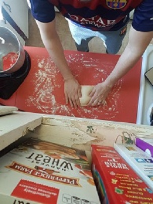

I bake.
On the occasion that I have free time I enjoy baking. I bake a good amount of sandwich loaves and pastry. Also Pizza.
The general process
This is a very basic and mediocre Japanese Milk Bread. That's one good thing about fresh baked bread, even when it's mediocre it is still always worth it.
First you mix

Then you knead
And knead some more
After a rise, shape it

And put it in the pan to rise again

Bake

Cover in butter

Eat